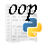

Элективный курс по информатике "Введение в объектно-ориентированное программирование на Python" представляет собой вводный курс, знакомящий с особенностями ООП (классах, объектах, наследовании, полиморфизме и др.).
Место курса "Введение в объектно-ориентированное программирование на Python" в составе образовательной программы дополнительного образования детей "Лаборатория юного линуксоида" — второй год обучения.
Курс рассчитан примерно на 12 часов.
Основной целью данного элективного курса является формирование базовых понятий объектно-ориентированного программирования, развитие системного мышления обучающихся. Курс не является учебником по Python.
План изложения оличается от большинства учебников по программированию, где описывают ООП. Обычно сначала вводятся такие понятия как класс, объект, наследование, инкапсуляция и полиморфизм. Возможно, это слишком большой объем абстрактной информации, которую сложно усвоить сразу.
В данном курсе сначала вводятся понятия класса и объекта, потом, постепенно, рассматриваются вопросы наследования, полиморфизма и др. При этом далеко не абсрактно, а на конкретных примерах. И только на предпоследнем уроке конкретизируются основные идеи объектно-ориентированного программирования.
Что касается инкапсуляции, то в python ее как таковой нет. По сути то, что есть – это не совсем инкапсуляция; вводить сложное понятие, которое в данном случае еще и немного другое – достаточно трудно. Поэтому урок про инкапсуляцию в элективном курсе опущен.
Циклы, ветвления, функции — все это элементы так называемого структурного программирования (директивная парадигма программирования). Для написания небольших программ возможностей структурного программирования обычно достаточно. Однако крупные проекты, работу над которыми ведут группы людей, намного рациональней выполнять используя парадигму объектно-ориентированного программирования. Почему? Это мы выясним позднее. Сначала разберемся в общих чертах, что из себя представляет объектно-ориентированное программирование.
ООП — аббревиатура (сокращенное название) объектно-ориентированного программирования.
Истоки ООП начинаются с 60-х годов XX века. Однако окончательное оформление и популяризацию можно отнести к 80-м годам XX века. Особую роль сыграл Алан Кей, сформулировавший основные принципы ООП. Наверное в настоящее время большинство проектов реализуются в стиле ООП. Хотя в программировании операционных систем (системном программировании) большую роль играет язык С (это не ОО язык).
Итак, что же такое ООП? Судя по названию ключевую роль в этой парадигме играет некий объект, а точнее множество объектов. Реальный мир состоит из объектов и их взаимодействий между собой. В результате взаимодействий объекты могут изменяться сами или изменять другие объекты. Поэтому, можно сказать, что ООП является более естественным в каком-то смысле.
В мире можно условно выделять различные системы, реализующие определенные цели (изменяющиеся из одного состояния в другое). Например, группа на занятии. Это система, состоящая из таких объектов как дети, учитель, столы, компьютеры, проектор и др. У этой системы можно выделить основную цель - увеличение доли знаний детей на некую величину. Чтобы добиться этого, объекты системы должны определенным образом выполнить взаимодействие между собой.
Пример с занятием - это своего рода программа. Допустим, что какому-то «глобальному программисту» нужно было, чтобы на планете люди обладали обширными знаниями. Для этого он придумал специальную программу, которая вбирает на входе людей с N-количеством знаний, а на выходе возвращает с N+1(возможно чуть меньше-больше)-количеством знаний. Он наделил определенными способностями объекты этой системы, чтобы можно было добиться результата. Так, грубо говоря, «объекты-дети» способны воспринимать информацию, «объект-учитель» - ее транслировать, «объекты-предметы» помогать воспринимать и транслировать. Несмотря на то, что все ученики так или иначе способны воспринимать информацию, они различны по своим свойствам (по скорости и объему восприятия, способам обработки знаний и т.п.). Выполнение программы может происходить примерно таким образом: «объект-учитель», используя «объект-доска», «объект-компьютер», «объекты-картинки», передает информацию «объектам-детям». Те в свою очередь принимают информацию и изменяют свои свойства (допустим, количество знаний в голове). На выходе мы получаем «объектов-детей» с новыми свойствами (хотя бывает, что программа дает сбои по разным причинам).
Следует понимать, существенную разницу между программой написанной с структурном «стиле» и программой в «стиле» ООП. В первом случае, на первый план выходит логика, понимание последовательности выполнения выражений (действий) для достижения целей. Во-втором — важно системное мышление, умение видеть систему в целом, с одной стороны, и понимание роли ее частей (объектов), с другой.
В свое время Алан Кей сформулировал для разработанного им языка программирования Smalltalk несколько принципов. Они прекрасно описывают принципы ООП. Так например, утверждается, что объектно-ориентированная программа состоит из объектов, которые посылают друг другу сообщения. Каждый объект может состоять из других объектов (а может и не состоять). Каждый объект принадлежит определенному классу (типу), который задает поведение объектов, созданных на его основе.
Что такое класс или тип? В реальном мире стол — это объект. Но когда его изготавливают, то руководствуются определенным описанием (знанием), что такое стол? Я могу сказать «стол» не имея ввиду никакой конкретный, но большинство поймут, о чем идет речь, т.к знают особенности этого предмета (крышка, четыре ножки и т. п.).
Класс — это описание объектов определенного типа. В каком-то смысле - это абстракция без материального воплощения, которая позволяет систематизировать объекты той или иной системы.
На основе классов создаются объекты. Может быть множество объектов, принадлежащих одному классу. С другой стороны, может быть класс без объектов, реализованных на его основе.
Посмотрите на рисунок. Допустим внешняя окружность — это программа. Она состоит из объектов (цветные фигуры) и классов (белые фигуры). Так объекты «красная_крупная_звезда» и «желтая_мелкая_звезда» могут обрабатывать (видоизменять) объекты «зеленый_треугольник» и «синий_прямоугольник». Звезды — разные объекты, хотя и принадлежат к одному классу. Поэтому можно заподозрить, что обрабатывают они объекты немного по разному. В данном случае объект-прямоугольник и объект-треугольник можно представить исключительно как данные. Кстати, в Python даже число — это объект, принадлежащий классу (типу) integer или float (или другому числовому типу).
Приведем более реальный программный пример (а не «из жизни про занятие»). Допустим нужно создать программу по обработке текстовой информации. Эта программа должна получать от пользователя данные, обрабатывать определенным способом, а затем выдавать на экран. Причем нам сказали написать эту программу, используя парадигму ООП. Выделим объекты системы: пусть это будут «приемщик», «обработчик №1», «обработчик №2» и «отображатель». Итак, пользователь передает «приемщику» текст и информацию каким «обработчиком» обрабатывать. «Приемщик» может взять все это (у него предусмотрены такие функции) и, предварительно оценив, что дают, может передать тому «обработчику», который выбрал пользователь. Выбранный «обработчик» видоизменяет текст и передает его «отображателю». Тот, в свою очередь, специфически форматирует текст и выводит на экран. Также в данной программе может быть предусмотрена возможность напрямую передавать текст от «приемщика» к «отображателю» минуя «обработчики».
Придумайте свою систему взаимодействующих объектов.
Многие современные языки поддерживают несколько парадигм программирования (например, директивное, функциональное, объектно-ориентированное). Такие языки являются смешанными. К ним относится и Python.
Итак, программа, написанная с использованием парадигмы объектно-ориентированного программирования, должна состоять из
Объект в программе можно создать лишь на основе какого-нибудь класса. Поэтому, первым делом, ООП должно начинаться с проектирования и создания классов. Классы могут располагаться или вначале кода программы, или импортироваться из других файлов-модулей (также в начале кода).
Для создания классов предусмотрена инструкция class. Это составная инструкция, которая состоит из строки заголовка и тела. Заголовок состоит из ключевого слова class, имени класса и, возможно, названий суперклассов в скобках. Суперклассов может и не быть, в таком случае скобки не требуются. Тело класса состоит из блока различных инструкций. Тело должно иметь отступ (как и любые вложенные конструкции в языке Python).
Схематично класс можно представить следующим образом:
class ИМЯКЛАССА: ПЕРЕМЕННАЯ = ЗНАЧЕНИЕ … def ИМЯМЕТОДА(self, ...): self.ПЕРЕМЕННАЯ = ЗНАЧЕНИЕ … …
Следует помнить, что методы в классах — это те же функции, за одним небольшим исключением. Они принимают один обязательный параметр — self (с англ. можно перевести как "собственная личность"). Он нужен для связи с конкретным объектом.
Атрибуты класса — это имена переменных вне функций и имена функций. Эти атрибуты наследуются всеми объектами, созданными на основе данного класса. Атрибуты обеспечивают свойства и поведение объекта. Объекты могут иметь атрибуты, которые создаются в теле метода, если данный метод будет вызван для конкретного объекта.
Объекты создаются так:
ПЕРЕМЕННАЯ = ИМЯКЛАССА()
Здесь скобки обязательны! После такой инструкции в программе появляется объект, доступ к которому можно получить по имени переменной, связанной с ним. При создании объект получает атрибуты его класса, т. е. объекты обладают характеристиками, определенными в их классах.
Количество объектов, которые можно создать на основе того или иного класса, не ограничено.
Объекты одного класса имеют схожий набор атрибутов, а вот значения атрибутов могут быть разными. Другими словами, объекты одного класса похожи, но индивидуально различимы. Чтобы понять это, можно сравнить отношения объектов одного класса в программировании со следующем высказыванием: "Все млекопитающие принадлежат одному классу и обычно имеют по два глаза, однако у каждого животного (объекта) глаза имеют свои особенности".
Можно сказать, что методы класса — это небольшие программки, предназначенные для работы с объектами. Методы могут создавать новые свойства (данные) объекта, изменять существующие, выполнять другие действия над объектами.
Методу необходимо "знать", данные какого объекта ему предстоит обрабатывать. Для этого ему в качестве первого (а иногда и единственного) аргумента передается имя переменной, связанной с объектом (можно сказать, передается сам объект). Чтобы в описании класса указать передаваемый в дальнейшем объект, используется параметр self. (Посмотрите на схему класса вверху.)
С другой стороны, вызов метода для конкретного объекта в основном блоке программы выглядит следующим образом:
ОБЪЕКТ.ИМЯМЕТОДА(…)
Здесь под словом ОБЪЕКТ имеется ввиду переменная, связанная с ним. Это выражение преобразуется в классе, к которому относится объект, в
ИМЯМЕТОДА(ОБЪЕКТ, …)
Т. е. конкретный объект подставляется вместо параметра self.
Попробуем на основе имеющихся уже знаний написать небольшую ОО-программу. Допустим, это будет класс с одним атрибутом вне метода и одним методом, который выводит с небольшим изменением значение этого атрибута на экран:
class First: color = "red" def out(self): print (self.color + "!")
Теперь создадим пару объектов данного класса:
obj1 = First() obj2 = First()
Оба этих объекта (obj1 и obj2) имею два одинаковых атрибута: color (в виде свойства) и out (в виде метода). Это легко проверить:
print (obj1.color) print (obj2.color) obj1.out() obj2.out()
В результате выполнения данного скрипта получается вывод двух надписей red и двух red!. Первые две надписи red – это результат применения встроенной функции print по отношению к свойствам объектов. Вторые две надписи red! - результат применения метода out к объектам.
В предыдущей программе оба созданных объекта абсолютно одинаковы. Класс, на основе которого они созданы, слишком прост и не предполагает того, что объекты могут иметь различные значения свойств. Исправим это.
Пусть теперь в классе с помощью атрибутов вне функции устанавливаются два свойства объектов: красный цвет и круглая форма. А методы могут менять эти свойства в зависимости от пожеланий тех, кто создает объекты.
class Second: color = "red" form = "circle" def changecolor(self,newcolor): self.color = newcolor def changeform(self,newform): self.form = newform obj1 = Second() obj2 = Second() print (obj1.color, obj1.form) # вывод на экран "red circle" print (obj2.color, obj2.form) # вывод на экран "red circle" obj1.changecolor("green") # изменение цвета первого объекта obj2.changecolor("blue") # изменение цвет второго объекта obj2.changeform("oval") # изменение формы второго объекта print (obj1.color, obj1.form) # вывод на экран "green circle" print (obj2.color, obj2.form) # вывод на экран "blue oval"
В данной программе по-умолчанию любой созданный объект имеет красный цвет и круглую форму. Однако в дальнейшем с помощью методов данного класса можно поменять и цвет и форму любого объекта. В результате объекты перестают быть одинаковыми (красными и круглыми), хотя сохраняют тот же набор свойств (цвет и форму).
Как же происходят изменения? Дело в том, что методы помимо параметра self, могут иметь и другие параметры, в которых передаются данные для обработки их этим методом. Так, в примере выше, метод changecolor имеет дополнительный параметр newcolor, с помощью которого в метод можно передать данные о желаемом цвете фигуры. Далее метод меняет цвет с помощью соответствующих инструкций.
Большинство классов имеют специальный метод, который автоматически при создании объекта создает ему атрибуты. Т.е. вызывать данный метод не нужно, т.к. он сам запускается при вызове класса. (Вызов класса происходит, когда создается объект.) Такой метод называется конструктором класса и в языке программирования Python носит имя __init__. (В начале и конце по два знака подчеркивания.)
Первым параметром, как и у любого другого метода, у __init__ является self, на место которого подставляется объект в момент его создания. Второй и последующие (если есть) параметры заменяются аргументами, переданными в конструктор при вызове класса.
Рассмотрим два класса: в одном будет использоваться конструктор, а в другом нет. Требуется создать два атрибута объекта.
class YesInit: def __init__(self,one,two): self.fname = one self.sname = two obj1 = YesInit("Peter","Ok") print (obj1.fname, obj1.sname)
class NoInit: def names(self,one,two): self.fname = one self.sname = two obj1 = NoInit() obj1.names("Peter","Ok") print (obj1.fname, obj1.sname)
Вывод интерпретатора в обоих случаях:
Peter Ok
В обоих программах у объекта появляются два атрибута: fname и sname. Однако в первом случае они инициализируются при создании объекта и должны передаваться в скобках при вызове класса. Если какие-то атрибуты должны присутствовать у объектов класса обязательно, то использование метода __init__ - идеальный вариант. Во второй программе (без использования конструктора) атрибуты создаются путем вызова метода names после создания объекта. В данном случае вызов метода names необязателен, поэтому объекты могут существовать без атрибутов fname и sname.
Обычно метод __init__ предполагает передачу аргументов при создании объектов, однако аргумент может не быть передан. Например, если в примере выше создать объект так: obj1 = YesInit(), т.е. не передать классу аргументы, то произойдет ошибка. Чтобы избежать подобных ситуаций, можно в методе __init__ присваивать параметрам значения по умолчанию. Если при вызове класса были заданы аргументы для данных параметров, то хорошо — они и будут использоваться, если нет — еще лучше — в теле метода будут использованы значения по умолчанию. Пример:
class YesInit: def __init__(self,one="noname",two="nonametoo"): self.fname = one self.sname = two obj1 = YesInit("Sasha","Tu") obj2 = YesInit() obj3 = YesInit("Spartak") obj4 = YesInit(two="Harry") print (obj1.fname, obj1.sname) print (obj2.fname, obj2.sname) print (obj3.fname, obj3.sname) print (obj4.fname, obj4.sname)
Вывод интерпретатора:
Sasha Tu noname nonametoo Spartak nonametoo noname Harry
В данном случае, второй объект создается без передачи аргументов, поэтому в методе __init__ используются значения по умолчанию ("noname" и "nonametoo"). При создании третьего и четвертого объектов передаются по одному аргументу. Если указывается значение не первого аргумента, то следует явно указать имя параметра (четвертый объект).
Метод __init__ может содержать параметры как без значений по умолчанию, так и со значениями по умолчанию. В таком случае, параметры, аргументы которых должны быть обязательно указаны при создании объектов, указываются первыми, а параметры со значениями по умолчанию — после. Например, ниже вторая программа с ошибкой:
class fruits: def __init__(self,w,n=0): self.what = w self.numbers = n f1 = fruits("apple",150) f2 = fruits("pineapple") print (f1.what,f1.numbers) print (f2.what,f2.numbers)
class fruits: def __init__(self,n=0,w): #ERROR self.what = w self.numbers = n f1 = fruits(150,"apple") f2 = fruits("pineapple") print (f1.what,f1.numbers) print (f2.what,f2.numbers)
Напишем более существенную программу с использованием конструктора. Допустим это будет класс, значение начальных атрибутов (из метода __init__) которого зависит от переданных аргументов при создании объектов. Далее эти свойства объектов, созданных на основе данного класса, можно менять с помощью обычных методов.
class Building: def __init__(self,w,c,n=0): self.what = w self.color = c self.numbers = n self.mwhere(n) def mwhere(self,n): if n <= 0: self.where = "отсутствуют" elif 0 < n < 100: self.where = "малый склад" else: self.where = "основной склад" def plus(self,p): self.numbers = self.numbers + p self.mwhere(self.numbers) def minus(self,m): self.numbers = self.numbers - m self.mwhere(self.numbers) m1 = Building("доски", "белые",50) m2 = Building("доски", "коричневые", 300) m3 = Building("кирпичи","белые") print (m1.what,m1.color,m1.where) print (m2.what,m2.color,m2.where) print (m3.what,m3.color,m3.where) m1.plus(500) print (m1.numbers, m1.where)
В данном примере значение атрибута where объекта зависит от значения атрибута numbers.
Одной из важнейших особенностей ООП является возможность наследования объектами атрибутов классов, а также наследование одними классами атрибутов других классов. На самом деле с наследованием мы уже сталкивались, когда создавали любой объект в Python: объекты наследуют атрибуты класса, хотя могут иметь и индивидуальные.
class Things: def __init__(self,n,t): self.namething = n self.total = t th1 = Things("table", 5) th2 = Things("computer", 7) print (th1.namething,th1.total) # Вывод: table 5 print (th2.namething,th2.total) # Вывод: computer 7 th1.color = "green" # новое свойство объекта th1 print (th1.color) # Вывод: green print (th2.color) # ОШИБКА: у объекта th2 нет свойства color!
Здесь оба объекта имеют свойства namething и total, однако только у первого объекта есть свойство color. Все просто: атрибуты класса наследуются объектами, созданными на его основе; однако атрибуты конкретного объекта не зависят от атрибутов других объектов и представляют собственное пространство имен объекта. Последнее позволяет объектам одного класса иметь различные значения атрибутов, а если потребуется и различный набор атрибутов.
Задание. Спишите код, выполните его с помощью интерпретатора Python. Как можно исправить код, чтобы не было ошибки? Исправьте.
На самом деле, наследование более широкое понятие, чем просто взаимосвязь между классами и объектами. Один класс может быть подклассом другого, дополняя его. Пояснить это можно проведя аналогию с реальным миром. Например, все столы имеют общие характерные черты («класс»), при этом они имеют разное назначение («подклассы»), хотя продолжают наследовать общие черты. В результате того, что есть такой механизм как наследование можно избежать избыточность кода, просто описав общие свойства и методы в надклассах.
По поводу терминологии. Классы, атрибуты которых наследуются другими классами, могут называть как надклассами так и суперклассами. Классы, которые наследуют атрибуты других классов, часто называют подклассами.
Класс, являющийся надклассом по отношению к одному классу, сам может быть подклассом по отношению к другому. Другими словами, может существовать целая цепочка наследования.
При обращении к атрибуту объекта (obj.prop) сначала просматривается на наличие этого атрибута сам объект, затем его класс, на основе которого он создан. Если в классе не будет найден атрибут, то его поиск продолжится в суперклассе, к которому относится класс.
Суперклассы класса указываются в скобках в заголовке инструкции class.
Рассмотрим такой пример:
class Table: def __init__(self,l,w,h): self.long = l self.width = w self.height = h def outing(self): print (self.long,self.width,self.height) class Kitchen(Table): def howplaces(self,n): if n < 2: print ("It is not kitchen table") else: self.places = n def outplases(self): print (self.places) t_room1 = Kitchen(2,1,0.5) t_room1.outing() t_room1.howplaces(5) t_room1.outplases() t_2 = Table(1,3,0.7) t_2.outing() t_2.howplaces(8) # ОШИБКА
Здесь создается два класса: Table и Kitchen. Второй является подклассом первого и наследует все его атрибуты (методы __init__ и outing). Далее создаются два объекта: t_room1 и t_2. Первый объект принадлежит к классу Kitchen и наследует атрибуты этого класса и его суперкласса. Второй объект принадлежит классу Table; к классу Kitchen он никакого отношения не имеет и поэтому не может обращаться к методам howplaces и outplases. В данном примере также можно увидеть, что объекты можно создавать как на основе классов так и суперклассов.
Задание. Расширьте программу, представленную выше, создав второй подкласс класса Table (например, Worker), содержащий пару методов, отличающихся от методов класса Kitchen().
Класс может иметь не один, а несколько суперклассов, которые перечисляются друг за другом в скобках в строке заголовка. Такое наследование называется множественным. Потребность во множественном наследовании возникает в случае, если объекты класса предполагают использование свойств и методов различных суперклассов.
Напишите программу, где класс «геометрические фигуры» (figure) содержит свойство color с изначальным значением white и метод для изменения цвета фигуры, а его подклассы «овал» (oval) и «квадрат» (square) содержат методы __init__ для задания начальных размеров объектов при их создании.
Парадигма объектно-ориентированного программирования помимо наследования включает еще одну важную особенность — полиморфизм. Слово «полиморфизм» можно перевести как «много форм». В ОО программировании этим термином обозначают возможность использования одного и того же имени операции или метода к объектам разных классов, при этом действия, совершаемые с объектами, могут существенно различаться. Поэтому можно сказать, что у одного и того же слова много форм. Например, два разных класса могут содержать метод total, однако инструкции в методах могут предусматривать совершенно разные операции: так в классе T1 – это прибавление 10 к аргументу, а в T2 – подсчет длины строки символов. В зависимости от того, к объекту какого класса применяется метод total, выполняются те или иные инструкции.
class T1: n=10 def total(self,N): self.total = int(self.n) + int(N) class T2: def total(self,s): self.total = len(str(s)) t1 = T1() t2 = T2() t1.total(45) t2.total(45) print (t1.total) # Вывод: 55 print (t2.total) # Вывод: 2
Задание. Напишите программу, запрашивающую у пользователя ввод числа. Если число принадлежит диапазону от -100 до 100, то создается объект одного класса, во всех остальных случаях создается объект другого класса. В обоих классах должен быть метод-конструктор __init__, который в первом классе возводит число в квадрат, а во-втором - умножает на два.
Ответ:
class One: def __init__(self,a): self.a = a ** 2 class Two: def __init__(self,a): self.a = a * 2 a = input ("введите число ") a = int(a) if -100 < a < 100: obj = One(a) else: obj = Two(a) print (obj.a)
Использование полиморфизма при наследовании классов позволяет переопределять методы суперклассов их подклассами. Например, может возникнуть ситуация, когда все подклассы реализуют определенный метод из суперкласса, и лишь один подкласс должен иметь его другую реализацию. В таком случае метод переопределяется в подклассе. Пример:
class Base: def __init__(self,n): self.numb = n def out(self): print (self.numb) class One(Base): def multi(self,m): self.numb *= m class Two(Base): def inlist(self): self.inlist = list(str(self.numb)) def out(self): i = 0 while i < len(self.inlist): print (self.inlist[i]) i += 1 obj1 = One(45) obj2 = Two('abc') obj1.multi(2) obj1.out() # Вывод числа 90 obj2.inlist() obj2.out() # Вывод в столбик букв a, b, c
В данном случае объект obj1 использует метод out из cуперкласса Base, а obj2 – из своего класса Two. Атрибуты ищутся «снизу вверх»: сначала в классах, затем суперклассах. Поскольку для obj2 атрибут out уже был найден в классе Two, то из класса Base он не используется. Другими словами, класс Two переопределят атрибут суперкласса Base.
При ООП может возникнуть ситуация, когда метод суперкласса в принципе подходит для реализации того или иного действия с объектами класса, однако требует небольших изменений. В таком случае можно использовать так называемое расширение метода, когда из тела метода класса вызывается метод суперкласса и дописываются дополнительные инструкции. В примере ниже в методе класса Subclass вызывается метод другого класса (в данном случае его суперкласса; однако может вызываться метод, не принадлежащий собственному суперклассу):
class Base: def __init__(self,N): self.numb = N def out(self): self.numb /= 2 print (self.numb) class Subclass(Base): def out(self): print ("\n----") Base.out(self) print ("----\n") i = 0 while i < 10: if 4 < i < 7: obj = Subclass(i) else: obj = Base(i) i += 1 obj.out()
Полиморфизм в объектно-ориентированном программировании дает возможность реализовывать так называемые единые интерфейсы для объектов различных классов. Имеется ввиду, что если есть методы с одинаковыми названиями (или операции, обозначаемая одинаковыми знаками, как будет показано в уроке №7) для всех объектов, то это позволяет писать более очевидный исходный код. Например, разные классы могут предусматривать различный способ вывода той или иной информации объектов. Однако единое название для всех объектов метода «вывода» позволит не запутать программу, сделать ее более очевидной.
Переопределение методов в подклассах (а также их расширение) позволяет специализировать ранее написанный исходный код, не меняя его в суперклассах, где обычно требуется оставить код в неизменном виде для других подклассов.
Напишите небольшую объектно-ориентированную программку, демонстрирующую такие свойства ООП как наследование и полиморфизм.
Еще одной особенностью объектно-ориентированного программирования является возможность реализовывать так называемый композиционный подход. Заключается он в следующем: есть класс-контейнер, который включает в себя вызовы других классов. В результате получается, что создавая объект класса-контейнера, мы одновременно создаем и объекты включенных в него классов.
Чтобы понять зачем нужна композиция в программировании, можно как всегда провести аналогию с реальным миром. Так подавляющее большинство природных, биологических и технических объектов состоят из других более простых частей, по своей сути, также являющихся объектами. Например, человек состоит из различный органов (сердце, кожа и др.), компьютер — из различного "железа" (процессор, ОЗУ, диск и т.д.).
Следует понимать, что "композиция" и "наследование" - достаточно разные свойства реальных и виртуальных систем. Наследование предполагает принадлежность к какой-то общности (похожесть), а композиция — формирование целого из частей.
Еще раз: при создании объекта, принадлежащего классу-контейнеру, автоматически создаются объекты-части, из которых он как бы состоит. Свойства и методы объектов частей определяются в их классах. Программисты могут создавать целые коллекции встраиваемых классов.
Рассмотрим использование композиции при программировании на Python с помощью конкретного примера.
Допустим, нам требуется написать программу, которая вычисляет площадь обоев для оклеивания комнаты определенных пользователем размеров. При этом необходимо учитывать, что окна, двери, пол и потолок оклеивать не надо.
Для начала решим данную задачу логически. Комната — это прямоугольный параллелепипед, состоящий из шести прямоугольников. Его площадь представляет собой сумму площадей составляющих его прямоугольников. Площадь прямоугольника равна произведению его длины на ширину.
Обои клеятся только на стены, следовательно площади верхнего и нижнего прямоугольников нам не нужны. Из рисунка можно заключить, что площадь одного прямоугольника равна x * z, второго – у * z. Противоположные прямоугольники равны, значит общая площадь четырех прямоугольников будет равна S = 2xz + 2уz = 2z(x+y). Потом из этой площади надо будет вычесть общую площадь дверей и окон. Двери и окна — это прямоугольники (как вычислить их площадь должно быть понятно).
Теперь приступим к созданию программы. В соответствие с изучаемой темой написать ее надо используя объектно-ориентированную парадигму программирования, да еще и применяя "композиционный подход" (насколько он здесь уместен не обсуждается :b).
Можно заметить, что фактически у нас есть три типа объектов - это объекты-окна, объекты-двери и объекты-комнаты. Получается три класса. Окна и двери являются частями помещения, а значит могут создаваться внутри класса «комнаты». Кроме того, для данной задачи существенное значение имеют только два свойства: длина и ширина. Поэтому классы «окна» и «двери» можно объединить в один. Понятно, что если для задачи были бы важны другие свойства (например, толщина стекла, материал), то возможно следовало бы создать два класса.
class Win_Door: def __init__(self,x,y): self.square = x * y
Здесь при вызове класса Win_Door будет автоматически создан атрибут square объекта, являющийся ссылкой на значение площади объекта.
Можно по-разному реализовать класс-контейнер. Есть подозрение, что многое зависит от задачи, решаемой программистом, его мастерства и вкуса. Классы-части можно вызывать в методе __init__, тем самым объекты-части будут автоматически создаваться при создании объекта-контейнера. Однако в данной задаче мы пойдем другим путем: окна и двери будут создаваться специальным для этих целей методом (будем считать, что так интересней). Также класс должен содержать метод для вычисления площади требуемых обоев (wallpapers). В конце можно добавить метод, в котором реализован вывод тех или иных данных.
class Room: def __init__(self,x,y,z): self.square = 2 * z * (x + y) def win_door(self, d,e, f,g, m=1,n=1): self.window = Win_Door(d,e) self.door = Win_Door(f,g) self.numb_w = m self.numb_d = n def wallpapers(self): self.wallpapers = self.square - \ self.window.square * self.numb_w \ - self.door.square * self.numb_d def printer(self): print ("Площадь стен комнаты равна "\ ,str(self.square)," кв.м") print ("Оклеиваемая площадь равна: ", \ str(self.wallpapers), " кв.м")
В методе __init__ создается атрибут square объекта представляющий собой площадь стен комнаты. Метод принимает три аргумента: длину, ширину и высоту помещения.
В методе win_door создаются два объекта: window и door, а также атрибуты numb_w и numb_d (в последних будут содержаться значения о количестве окон и дверей). Если при вызове данного метода в программе не будет указано количество окон и дверей, то по умолчанию будут подставлены значения равные 1.
Метод wallpapers вычисляет площадь_требуемых_обоев = площадь_комнаты — площадь_окна * количество_окон — площадь_двери * количество_дверей. В коде данная строка разбита на несколько строчек с помощью знака \ (так делают, если строка очень длинная). Также обратите внимание, как происходит обращение к свойствам square объектов-частей: указывается объект класса Room (в классе его заменяет self), далее объект-часть, и наконец, сам атрибут (свойство) объекта-части.
Метод printer просто выводит данные.
После того, как классы созданы, посмотрим как это все работает.
1. Создаем объект класса Room:
labor34 = Room(5,4,2)
2. Создаем в помещении labor34 окна и двери:
labor34.win_door(1.5,1.5, 2,1, 2)
Обратите внимание, что количество дверей не указано, а значит их будет ровно 1.
3. Вычисляем метры обоев:
labor34.wallpapers()
4. Просим вывести, что получилось:
labor34.printer()
В результате работы метода printer интерпретатор должен выдать что-то вроде этого:
Площадь комнаты равна 36 кв.м Оклеиваемая площадь равна: 29.5 кв.м
Может показаться, что в программе всего один реальный объект — labor34. Однако это не так. Там есть еще объекты labor34.window и labor34.door. Чтобы в этом убедиться достаточно обратиться к их свойствам.
print(labor34.window.square) print(labor34.door.square)
Попробуйте самостоятельно придумать задачу, для решения которой можно использовать композиционный подход. Напишите программу на Python.
На прошлом уроке нами была написана "серьезная" программа, которую могут использовать другие программисты. Однако как? Просто копировать код и вставлять в свои скрипты? Или есть более экономный способ (в смысле уменьшения объема кода и удобства его использования)?
При создании крупных программ оказался выгодным так называемый модульный принцип организации, когда есть основной файл с частью кода программы, к которому подсоединяется (в который импортируется) содержимое других файлов. Когда исходный код основного файла транслируется в машинный код, то импортируемые файлы также выполняются как и код основного файла.
Такой способ организации программы позволяет изолировать часто используемый код в файл-модуль, а затем импортировать его в другие файлы без копирования кода. Но это далеко не единственное преимущество модульного принципа организации программы.
Так как же импортировать содержимое одного файла в другой в языке программирования Python? Существует два основных способа: инструкция import и инструкция from. Первая инструкция запускает (интерпретирует) файл-модуль полностью, при этом для доступа к переменным (атрибутам) модуля из основного файла следует указывать имя модуля впереди требуемого атрибута: module.attribute (так называемая, точечная нотация). Инструкция from передает интерпретатору лишь указанные имена из файла-модуля, однако при доступе к этим переменным не надо указывать имя модуля. Первый способ хорош, если предстоит пользоваться содержимым почти всего модуля, второй — если будут востребованы одна-две функции или класс из модуля. В примере данного урока мы воспользуемся инструкцией import.
Импорт в языке программирования Python осуществляется следующим образом: после слова import пишется имя импортируемого модуля. Модуль и файл в Python понятия почти не различимые. Файлы с кодом на языке Python обычно имеют расширение .py, однако в инструкции import расширение не указывается. Например, если мы имеем файл-модуль scale.py, то импортировать его в другой файл следует так: import scale.
Где должен располагаться модуль? В принципе, где угодно, т.к. можно "вручную" настроить интерпретатор так, что он будет искать там, где пожелает программист. Однако, если ничего не настраивать, то интерпретатор Python найдет файлы, если их расположить например, в каталоге, куда установлен Python или в том же каталоге, где и файл, в который осуществляется импорт. Этим последним вариантом мы и воспользуемся.
Итак, у нас есть файл с кодом, позволяющим вычислять оклеиваемую площадь помещения (урок №7). Пусть он называется rooms.py. Кроме того, удалим из него "код тестирования" …
labor34 = Room(5,4,2) labor34.win_door(1.5,1.5, 2,1, 2) labor34.wallpapers() labor34.printer() print(labor34.window.square) print(labor34.door.square)
… и предположим, что классы этого модуля будут использоваться в другом (основном) файле. Допустим, этот основной файл предоставляет интерфейс пользователю для ввода данных и получения результата. Основной файл должен быть сохранен в том же каталоге, что и файл rooms.py.
Первым делом, импортируем содержимое файла rooms.py
import roomsДалее организуем запрос данных у пользователя, одновременно преобразовав данные в целочисленный тип (функция int):
print ("Введите размеры помещения (в метрах) ...") l = int(input ("длина: ")) w = int(input ("ширина: ")) h = int(input ("высота: ")) print ("Введите данные об оконных проемах (в метрах) ...") h_w = int(input ("высота: ")) w_w = int(input ("ширина: ")) m = int(input ("количество: ")) print ("Введите данные о дверных проемах (в метрах) ...") h_d = int(input ("высота: ")) w_d = int(input ("ширина: ")) n = int(input ("количество: "))
Теперь создаем объект класса Room. Описание класса находится в модуле rooms, который был импортирован инструкцией import (а не from), поэтому, чтобы получить доступ к классу Room и его атрибутам, следует при создании объекта указать модуль, в котором он находится:
uroom = rooms.Room(l,w,h)
А теперь можно пользоваться атрибутами класса из модуля сколько влезет:
uroom.win_door(h_w, w_w, h_d, w_d, m,n) uroom.wallpapers() uroom.printer()
На прошлом уроке мы рассмотрели случай импорта программного кода одного файла в другой. Таким образом, например, один программист может использовать разработки другого. К тому же, существует множество стандартных модулей и библиотек, входящих в установочный пакет интерпретатора python, а также огромное количество модулей сторонних разработчиков. Понятно, что чтобы использовать чужую разработку надо знать, что она делает. Для этого вовсе необязательно анализировать исходный код, поскольку есть инструменты для его документирования, которыми приличные программисты должны регулярно пользоваться. Когда кому-то потребуется узнать, что делает тот или иной скрипт, достаточно будет выполнить специальную команду, которая выдаст описание модуля.
Документировать исходный код на языке программирования Python можно по разному. Иногда бывает достаточно простых комментариев. Еще один способ — это создание строк документации. Они представляют собой текст, заключенный в кавычки (тройные, тройные одинарные, обычные). Такой текст может располагаться после заголовков классов, функций (методов), а также в начале файла (модуля). Пример:
""" Строка документации в начале файла. А это ее продолжение с новой строки. """ class … : ''' Это строка документирования класса. Причем она заключена в тройные одинарные кавычки... или одинарные тройные 0_о ''' ..... ..... def … : """ Это документирование модуля. Пишите коменты на инглише. """
Для получения доступа к такой документации предусмотрена специальный метод __doc__. Когда интерпретатор Python обрабатывает исходный код класса или функции и обнаруживает там строки документирования, то делает их значением атрибута __doc__ данного объекта.
Чтобы посмотреть как это выглядит, рассмотрим реальный пример. В языке программирования Python строки, списки, числа являются по-сути такими же классами как и пользовательские (создаваемые для специализированного проекта). Данные классы автоматически загружаются (интерпретируются), когда запускается программа-интерпретатор python, поэтому не требуется дополнительный импорт модулей, содержащих их описание. Однако сути это не меняет, и получить доступ к их строкам документации можно также как и к пользовательскому классу (функции, модулю), а именно имяОбъекта.__doc__. Пример:
>>> print (str.__doc__) str(string[, encoding[, errors]]) -> str Create a new string object from the given encoded string. encoding defaults to the current default string encoding. errors can be 'strict', 'replace' or 'ignore' and defaults to 'strict'.
Таким образом, мы получили данные о классе str (описывает атрибуты строк). Однако мы не получили никаких сведений о методах данного класса. Да и вообще: какие методы есть у строк? Тут может помочь встроенная функция dir, которая выводит список переменных (атрибутов) переданного ей аргумента.
>>> dir(str) ['__add__', '__class__', '__contains__', '__delattr__', '__doc__', '__eq__', '__format__', '__ge__', '__getattribute__', '__getitem__', '__getnewargs__', '__gt__', '__hash__', '__init__', '__iter__', '__le__', '__len__', '__lt__', '__mod__', '__mul__', '__ne__', '__new__', '__reduce__', '__reduce_ex__', '__repr__', '__rmod__', '__rmul__', '__setattr__', '__sizeof__', '__str__', '__subclasshook__', '_formatter_field_name_split', '_formatter_parser', 'capitalize', 'center', 'count', 'encode', 'endswith', 'expandtabs', 'find', 'format', 'index', 'isalnum', 'isalpha', 'isdecimal', 'isdigit', 'isidentifier', 'islower', 'isnumeric', 'isprintable', 'isspace', 'istitle', 'isupper', 'join', 'ljust', 'lower', 'lstrip', 'maketrans', 'partition', 'replace', 'rfind', 'rindex', 'rjust', 'rpartition', 'rsplit', 'rstrip', 'split', 'splitlines', 'startswith', 'strip', 'swapcase', 'title', 'translate', 'upper', 'zfill']
Допустим, нас интересует функция метод find, но мы точно не знаем, делает ли он то, что нам нужно. Выяснить это можно так:
>>> print (str.find.__doc__) S.find(sub[, start[, end]]) -> int Return the lowest index in S where substring sub is found, such that sub is contained within s[start:end]. Optional arguments start and end are interpreted as in slice notation. Return -1 on failure.
Становятся известны следующие подробности. Оказывается функция find класса str просто возвращает первый индекс подстроки переданной ей в качестве аргумента, если та встречается в строке. По желанию можно указать откуда и докуда искать в исходной строке. Не в тему, но чтобы было понятно:
>>> a = "hello new worlds" # создаем строку >>> a.find("new") # ищем индекс первого элемента подстроки 6 >>> a.find("l",7) # ищем индекс символа, начиная с 8-го элемента 13
Обратите внимание, когда мы вызывали метод __doc__ для объектов, то использовали встроенную функцию print. Зачем? Ведь в интерактивном режиме вывод работает и без print. Однако если при вызове метода __doc__ не использовать функцию print, то вывод не отформатируется, а будет выглядеть как в исходном коде:
>>> str.__doc__ "str(string[, encoding[, errors]]) -> str\n\nCreate a new string object from the given encoded string.\nencoding defaults to the current default string encoding.\nerrors can be 'strict', 'replace' or 'ignore' and defaults to 'strict'."
Обратите внимание на сочетание символов \n. Оно обозначает переход на новую строку. Вообще оформление строк документации должно соответствовать определенному стандарту.
Еще более интересный способ получить информацию о модуле или его частях — это использование встроенной функции help. Она выводит текстовый отчет о переданном ей в качестве аргумента объекте. Этот отчет включает не только строки документации, но и структуру запрошенной части кода. т.е. применив функцию help по отношению к объектам мы получим еще и информацию о внутренних функциях и классах.
"It is the program for definition of quantity of wall-paper" class Win_Door: """ Class Win_Door calculates the area of a rectangular. Method __init__ accepts two parameters: length and width. """ def __init__(self,x,y): self.square = x * y class Room: """ Class Room is intended for definition of the pasted over area of a room. Method __init__ accepts three arguments (length, width and height). """ def __init__(self,x,y,z): self.square = 2 * z * (x + y) def win_door(self, d,e, f,g, m=1,n=1): """ The first pair parameters - the sizes of a window, the second pair - the sizes of a door, the fifth and sixth parameters - quantity of windows and doors accordingly """ self.window = Win_Door(d,e) self.door = Win_Door(f,g) self.numb_w = m self.numb_d = n def wallpapers(self): """ This method calculates the pasted over area """ self.wallpapers = self.square - \ self.window.square * self.numb_w \ - self.door.square * self.numb_d def printer(self): """ Displays the information """ print ("Площадь стен комнаты равна "\ ,str(self.square)," кв.м") print ("Оклеиваемая площадь равна: ", \ str(self.wallpapers), " кв.м")
До этого мы говорили только о классах и объектах, которые создает программист (пользовательские классы). Однако Python настолько объектно-ориентированный язык, что в нем любые строка, число, список и др. являются по сути объектами, принадлежащими встроенным классам (типам данных): строкам, числам и др. Т. е. типы данных — это встроенные классы, а любые данные — это объекты.
Объектно-ориентированное программирование подразумевает не только наличие объектов, но и их взаимодействие между собой. Поэтому важно, чтобы к объектам разных классов можно было применить одну и туже операцию (например, сложение).
Для пользовательских классов предусмотрены специальные методы, позволяющие объектам данных классов участвовать в таких привычных операциях как сложение, вычитание, умножение, деление (+ - * /), а также во многих других. Другими словами, смысл (то, что он делает) знака + (или любого другого оператора) зависит от того, к каким объектам он применяется. Это называется перегрузкой операторов. В классах перегруженные операторы описываются с помощью специальных зарезервированных методов, которые в начале и в конце имеют по два знака подчеркивания. В уроке рассматриваются лишь некоторые из них. Кроме того, ранее был уже рассмотрен один такой метод — конструктор __init__, который автоматически вызывается при создании объектов класса.
Рассмотрим пример перегрузки операторов.
class Newclass: def __init__(self, base): self.base = base def __add__(self, a): self.base = self.base + a def __str__(self): return "%s !!! " % self.base a = Newclass(10) a + 20 print (a) b = Newclass("yes") b + "terday" print (b) c = Newclass([2,6,3]) c + [7, 1] print (c)
В данном примере используется два метода (исключая __init__) перегрузки операторов: __add__ и __str__. Метод __add__ вызывается в том случае, когда объект данного класса участвует в операции сложения (для чисел), конкатенации (для строк) и объединения (для списков). Метод __str__ вызывается, когда объект передается в качестве аргумента встроенной функции print (на самом деле не только ей) и представляет данные в виде строки.
Результат работы скрипта представленного выше будет таким:
30 !!! yesterday !!! [2, 6, 3, 7, 1] !!!
Задание. Спешите пример, посмотрите как он работает. Дополните класс методами __mul__ (вызывается при использовании объекта в операциях умножения) и __sub__ (вычитание). Вызовите данные методы с помощью соответствующих операций с объектами. Для каких объектов невозможно использовать метод __sub__?
Метод __call__ автоматически вызывается, когда к объекту обращаются как к функции. Например, здесь во второй строке произойдет вызов метода __call__ некогоКласса:
Другими словами, метод __call__ позволяет объектам вести себя как функции.
Пример:
class Changeable: def __init__(self, color): self.color = color def __call__(self, newcolor): self.color = newcolor def __str__(self): return "%s" % self.color canvas = Changeable("green") frame = Changeable("blue") canvas("red") frame("yellow") print (canvas, frame)
В этом примере с помощью конструктора класса при создании объектов устанавливается их цвет. Если требуется его поменять, то достаточно обратиться к объекту как к функции и в качестве аргумента передать новый цвет. Такой обращение автоматически вызовет метод __call__ (который, в данном случае, изменит атрибут color объекта).
Задание. Создайте класс с методом __call__, принимающим два параметра и производящим над ними те или иные математические операции. Создайте несколько объектов класса и, затем, обратитесь к ним как к функциям.
Рассмотренные в этом уроке методы перегрузки операторов лишь малая часть из существующих. Фактически все, что можно делать со встроенными типами (числами, словарями и др.), можно реализовать и для пользовательских типов (классов). Можно сказать, что перегрузка операторов обеспечивает единый интерфейс для встроенных и пользовательских типов (классов). Так, в первом примере можно видеть как "складываются" объект-число и объект класса Newclass.
Общее представление об объектно-ориентированном программировании было рассмотрено на первом уроке. Здесь будет обобщение ранее рассмотренного материала и формулирование принципов, лежащих в основе ООП.
Во многих учебниках выделяют такие основные идеи ООП как наследование, инкапсуляция и полиморфизм. Заключаются они примерно в следующем:
В связи со своими особенностями объектно-ориентированное программирование имеет ряд преимуществ перед структурным (и др.) программированием. Выделим некоторые из них:
ООП позволяет сократить время на написание исходного кода, однако ООП всегда предполагает большую роль предварительного анализа предметной области, предварительного проектирования. От правильности решений на этом предварительном этапе зависит куда больше, чем от непосредственного написания исходного кода.
По сравнению с другими распространенными языками программирования у Python можно выделить следующие особенности, связанные с объектно-ориентированным программированием:
В конце данного курса придумаем и напишем небольшую программу, используя объектно-ориентированную парадигму программирования.
Как уже отмечалось в предыдущем уроке в ООП очень важен этап предварительного проектирования. Вообще можно выделить следующие этапы создании ОО-программы:
Первый этап:
Допустим нам надо написать программу по «сценарию» описанному в уроке 1: про занятие, где ученики должны получить некий объем знаний.
Второй этап:
Какие объекты понадобятся? Очевидно, это ученики, учитель, информация, а также возможно вспомогательные предметы такие как проектор и др.
Третий этап:
Классы: учитель, ученик, информация. Учитель и ученик во многом похожи: по идеи оба - люди. Значит классы учитель и ученик могут принадлежать одному суперклассу - человек. Однако не все так просто. Если существенные признаки для решения данной задачи не имеют ничего общего, то выделить что-то в суперкласс просто невозможно.
Четвертый этап:
Выделим важное, чем должны обладать объекты (классы) для решения задачи «увеличить знания».
Ученик должен уметь воспринимать информацию, и превращать ее в знания.
Учитель, по крайней мере, должен уметь выбирать и транслировать информацию.
Информация должна содержать определенный набор строк символов. Должна быть предусмотрена возможность извлечения ее частей.
Пятый этап:
Класс «Информация»:
class Information: def __init__(self,info): self.info = info def extract(self,i): self.current = self.info[i] return "%s" % self.current
Объекты данного класса при создании должны содержать ту или иную информацию (содержание урока), допустим в виде списка. В классе также предусмотрен метод extract, позволяющий извлекать какую-то часть информации и возвращать ее в основную программу.
Класс «Учитель»:
class Teacher: def into(self,phrase): self.phrase = phrase def out(self): return "%s" % self.phrase
Объектам типа «Учитель» в нашей программе позволено лишь вспоминать фразу и громко транслировать.
Класс «Ученик»:
class Pupil: def __init__(self): self.know = [] def take(self, i): self.know.append(i)
Объекты класса Pupil уже при своем создании обязаны иметь атрибут know, куда будут помещаться знания. Также предусмотрен метод take, обеспечивающий приемку информации.
Создание объектов:
Допустим в программе будет по одному объекту «Информатика» и «Учитель» и пару объектов «Ученик».
inform = Information(["> (больше)","< (меньше)","== (равно)", "!= (не равно)"]) t = Teacher() p1 = Pupil() p2 = Pupil()
Решение задачи с помощью взаимодействия объектов:
Какая в данном случае задача? Научить учеников чему-нибудь. Приступим.
t.into(inform.extract(2)) p1.take(t.out()) print ("1-ый ученик пока еще знает только ", p1.know) t.into(inform.extract(0)) p1.take(t.out()) p2.take(t.out()) print ("1-ый ученик знает, что ", p1.know) print ("2-ой ученик знает, что ", p2.know)
Учитель берет с помощью метода extract объекта inform часть информации. Ученики, используя свой метод take имеют возможность получить информацию, воспроизводимую учителем (метод out объекта t).
В результате работы этой программы атрибут know учеников изменяется (если конечно те использовали метод take).